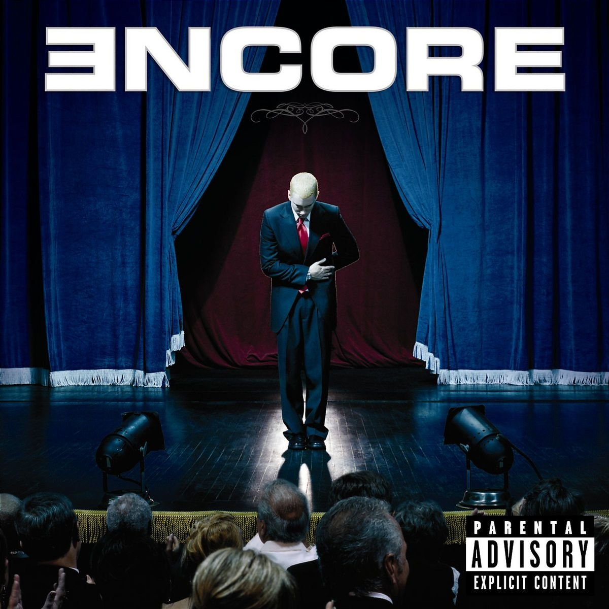
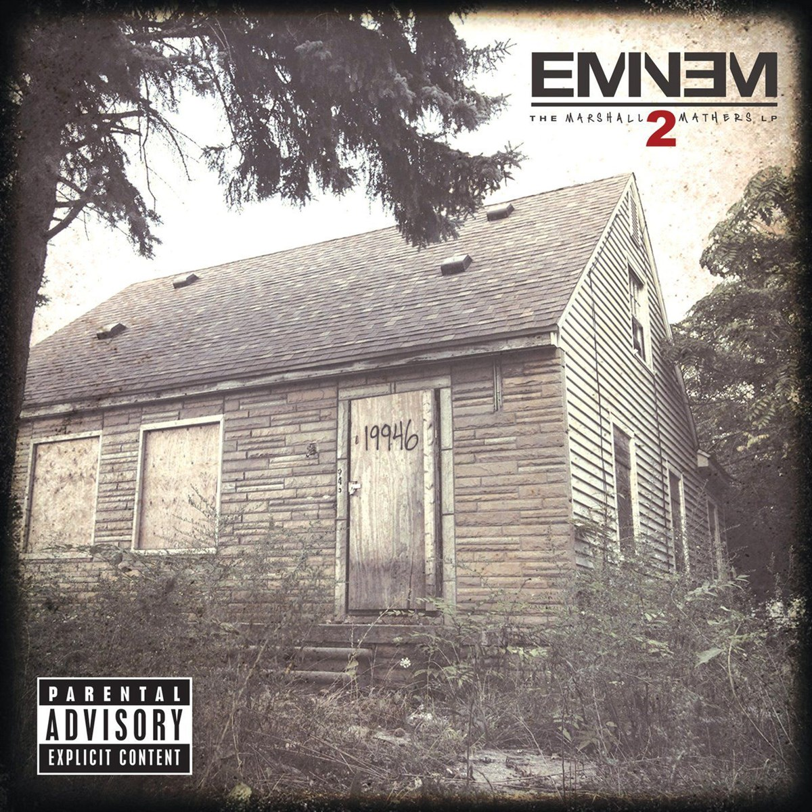
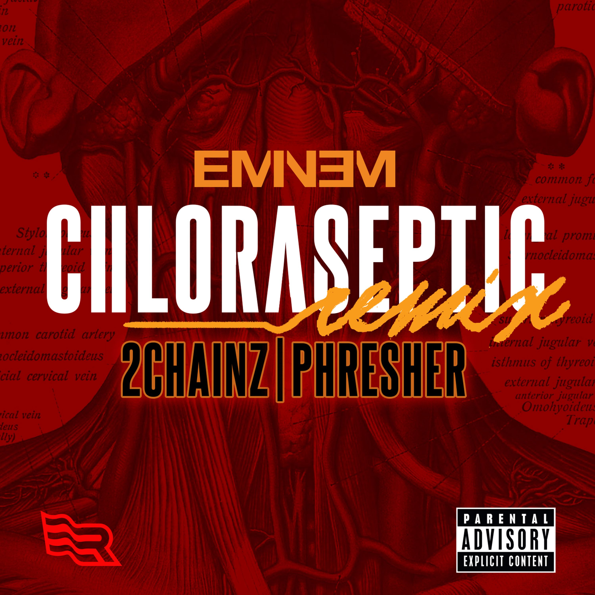
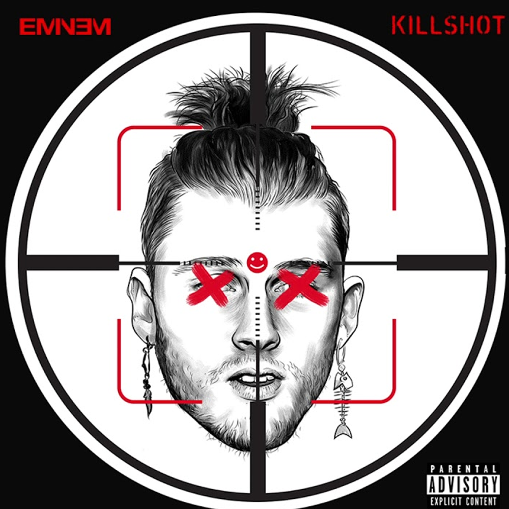
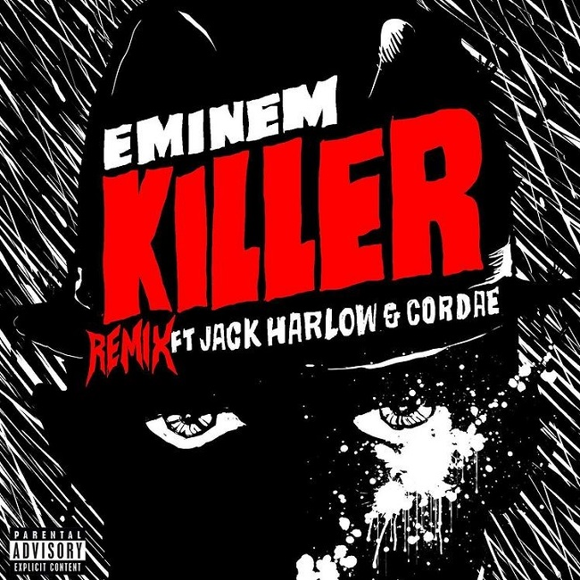

THE SLIM SHADY LP (EXPANDED EDITION)

The tracklist is as follows
- Hazardous Youth
- Get You Mad
- Greg
- Bad Guys Always Die
- Guilty Consciente (Radio Version)
- Guilty Conscience (Intrumental)
- Guilty Conscience (A Cappella
- My Name Is (Instrumental)
- Just Don't Give a Fuck (Intrumental)
THE EMINEM SHOW (EXPANDED EDITION)

The tracklist is as follows:
- Stimulate
- The Conspiracy Freestyle
- Bump Heads (Featuring 50 Cent, Tony Yayo, and Lloyd Banks)
- Johnny, Brian and Mike (Previously Unreleased)
- Freestyle (#1) (Live at Tramps, New York, 1999)
- Brain Damage (Live at Tramps, New York, 1999)
- Freestyle (#2) (Live at Tramps, New York, 1999)
- Just Don't Give a Fuck (Live at Tramps, New York, 1999)
- The Way I Am (Live at the Fuji Rock Festival, 2001) (Featuring Proof)
- The Real Slim Shady (Live at the Fuji Rock Festival, 2001) (Featuring Proof)
- Business (Instrumental)
- Cleanin' Out My Closet (Instrumental)
- Square Dance (Instrumental)
- Without Me (Instrumental)
- Sing For The Moment (Instrumental)
- Superman (Instrumental)
- Say What You Say (Instrumental)
- 'Till I Collapse (Instrumental)
ENCORE (DELUXE EDITION)
The Tracklist is as Follows:
- We as Americans
- Love You More
- Ricky Ticky Toc
RELAPSE (DELUXE)

The tracklist is as follows:
- My Darling
- Careful What You Wish For
RELAPSE: REFILL

The soundtrack is as follows:
- Forever (with Drake, Kanye West, & Lil Wayne)
- Hell Breaks Loose (feat. Dr. Dre)
- Buffalo Bill
- Elevator
- Taking My Ball
- Music Box
- Drop The Bomb On 'Em
EMINEM PRESENTS: THE RE-UP

The soundtrack is as follows:
- Shady Narcotics (Intro)
- We're Back
- Pistol Pistol (Remix)
- Murder
- Everything is Shady
- The Re-Up
- You Don't Know
- Jimmy Crack Corn
- Trapped
- Whatever You Want
- Talkin' All That
- By My Side
- We Ride for Shady
- There He Is
- Tryin' Ta Win
- Smack That (Remix)
- Public Enemy #1
- Get Low
- Ski Mask Way (Eminem Remix)
- Shake That (Remix)
- Cry Now (Shady Remix)
- No Apologies
- Billion Bucks (Bonus Track)
RECOVERY (DELUXE)

The tracklist is as folllows:
- Ridaz
- Session One (featuring Slaughterhouse)
THE MARSHALL MATHERS LP 2 (DELUXE EDITION)
The tracklist is as follows:
- Baby
- Desperation
- Groundhog Day
- Beautiful Pain
- Wicked Ways
although just an album gathering the top hits, there are three new songs in this album
CURTAIN CALL: THE HITS

The tracklist is as follows:
- Intro
- FACK
- The Way I Am (from The Marshall Mathers LP)
- My Name Is (from The Slim Shady LP)
- Stan (featuring Dido) (from The Marshall Mathers LP)
- Lose Yourself (from 8 Mile)
- Shake That
- Sing for the Moment (from The Eminem Show)
- Without Me (from The Eminem Show)
- Like Toy Soldiers (from Encore)
- The Real Slim Shady (from The Marshall Mathers LP)
- Mockingbird (from Encore)
- Guilty Conscience (featuring Dr. Dre) (from The Slim Shady LP)
- Cleanin' Out My Closet (from The Eminem Show)
- "Just Lose It" (from Encore)
- "When I'm Gone"
- "Stan" (Live) (featuring Elton John)
Scary Movies is briefly featured in a radio station from GTA III
SCARY MOVIES (SINGLE)

The tracklist is as follows:
- Scary Movies
CAMPAIGN SPEECH (SINGLE)

The tracklist is as follows:
- Campaign Speech
CHLORASEPTIC (SINGLE)
The tracklist is as follows:
- Chloraseptic (feat. 2Chainz & Phresher)
NOWHERE FAST (EXTENDED VERSION) (SINGLE)

The tracklist is as follows:
- Nowhere Fast (feat. Kehlani)
Killshot was a single released as a response to Machine Gun Kelly
KILLSHOT (SINGLE)
The tracklist is as follows:
- Killshot
Remember the Name is a single from Eminem and originally was a song from Ed Sheeran's album collaboration project
REMEMBER THE NAME (SINGLE)

- Remember the Name
THE ADVENTURES OF MOON MAN & SLIM SHADY (SINGLE)

The tracklist is as follows:
- The Adventures of Moon Man & Slim Shady
LAST ONE STANDING (SINGLE)

The tracklist is as follows:
- Last One Standing
- Venom (Remix)
KILLER (SINGLE)
The tracklist is as follows:
- Killer (Feat.Jack Harlow & Cordae)
Gospel is the first Eminem song to be featured in a Grand Theft Auto Game after Scary Movies featured in GTA III. the song is from Dr.Dre's album cameo in GTA V

The tracklist is as follows:
- Gospel (feat. Eminem)